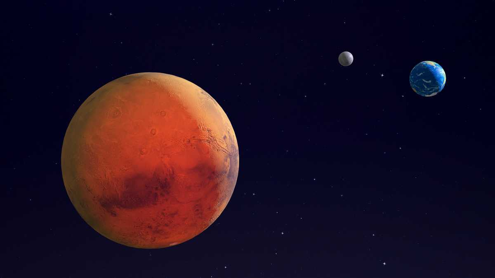

El hombre siempre ha tenido una mirada curiosa hacia Marte, el “planeta rojo”. Marte fue uno de los primeros planetas en ser observados a través de un telescopio y desde mediados del siglo XIX algunos científicos comenzaron a especular la existencia de vida extraterrestre e incluso el astrónomo Giovanni Schiaparelli describió la presencia de canales diseñados para transportar agua, supuestamente útiles para alguna civilización marciana. Pero hasta ahora, la evidencia de vida en Marte es prácticamente nula. Es uno de los 4 planetas telúricos (rocosos). Su parecido con la Tierra influyó en la creencia de vida marciana, pues su superficie presenta formaciones permanentes y casquetes polares que en realidad no están conformados por verdadero hielo, sino por una capa de escarcha o probablemente hielo seco.
Marte es un planeta rocoso y al igual que los demás planetas telúricos, su superficie presenta marcas de impactos contra otros cuerpos celestes. El vulcanismo, los movimientos de su corteza y algunos fenómenos ligados a su atmósfera (como las tormentas de polvo) también han modificado su superficie. El mote de “planeta rojo” tiene una explicación muy sencilla. Sucede que el suelo marciano posee minerales de hierro que se oxidan y le otorgan una coloración rojiza que es posible distinguir desde la Tierra. Las manchas nítidas sobre Marte facilitaron la observación y el cálculo de sus períodos orbitales. La tectónica de Marte tiene una posición vertical. Hay capas de hielo polar, volcanes, valles y desiertos. Los cráteres más anchos se encuentran muy erosionados, rellenos del polvo que las tormentas transportan y deformados por la expansión y contracción que provocan los continuos cambios de temperatura. Es sede del Monte Olimpo, el volcán más grande de un planeta del Sistema Solar, así como de Valles Marineris, uno de los cañones más grandes y espectaculares que el hombre ha visto, con una longitud equivalente a la distancia entre Nueva York y Los Ángeles (Estados Unidos).
Su atmósfera es muy fina y tenue, compuesta principalmente por dióxido de carbono, nitrógeno y argón. Para mayor exactitud, se compone por un 96 por ciento de dióxido de carbono, un 2 por ciento de argón, un 2 por ciento de nitrógeno y de 1 por ciento de otro u otros elementos.